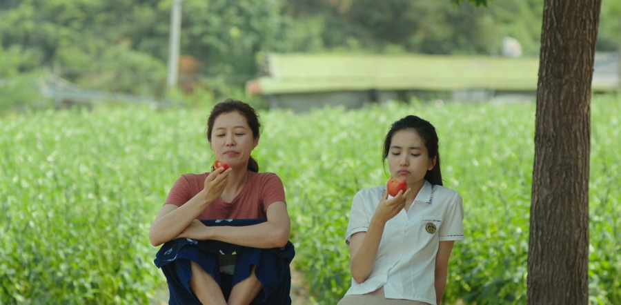

Food
Hotel Himalayan Horizon in Dhulikhel is a peaceful escape from city life. The five restaurants housed in the hotel all offer distinctly different menus.
A feast—also for the eyes
.jpg)
Dhulikhel has become a popular hotspot for weekend breathers. Desperation to be away from the cloying grasp of the polluted city is enough for people to pack their bags and find themselves soaking up the scenic snow-capped mountains sprawled in a pool-side sun lounger. Naturally, as a hub for weekend hangouts, hotels and resorts in the vicinity must up their game to stand out amidst the many hospitality centres to attract customers. In this regard, Hotel Himalayan Horizon is incredibly hard to miss; the hotel is huge, with five restaurants and multiple buildings also housing a pool and spa. Upon entering the hotel grounds, it’s easy to feel a bit disoriented, especially for those with limited navigational skills. We couldn’t help but notice the contrast between the stark white colour of some buildings and the brick-red shades of others, which revealed the varying stages of renovation each of these buildings were in. The friendly waitstaff guided us to the pool-side dining area, where the ambience was warm and cosy—with the midday sun casting a brilliant glow and the pool a whirlpool of dark blue.
As we patiently waited for our food to arrive, Tamanatha Dhungana, the general manager, shared that Himalayan Horizon prides itself in offering a diverse range of cuisines. The five restaurants within the hotel premises—Buddha Garden, Panchakanya, Pavilion, Poolside Restaurant (a little on the face with that one) and Cafe Matina—serve distinctly different food, but they are all prepared in the same kitchen. Between our chit-chat, just as we were about to inquire about our food, the waitstaff dramatically brought us multiple plates of starters, poshly concealed by cloches. Besides the flashy presentation, the starters were okay in taste. An array of dishes was laid out on our table—Chicken Chilly (Rs620), Paneer Chilly (Rs510), Crunchy Fried Fried Chicken (Rs670), Crunchy Fried Mushroom (Rs560), and Chicken Basket (Rs880). As we slowly munched through them all, the Chicken Basket—flattened chicken with a delightfully crispy breadcrumb coating—stood out the most.
Politics
Chinese politicians meeting Nepali leaders

A delegation from the International Liaison Department of the Communist Party of China led by Vice Minister Sun Haiyan arrived in Kathmandu on Friday. The purpose of the visit is said to be to strengthen party-to-party relations through a joint consultative conference with Nepali political leaders. The CPC delegation was invited by the CPN (Maoist Centre), according to sources. The delegation arrived via Bangladesh after visiting some South Asian nations. Pampha Bhusal, vice-chair of the Maoist Centre, party secretary Ganesh Shah, and Chinese Ambassador to Nepal Chen Song received the five-member delegation at the Kathmandu airport. “They will be meeting leaders of various parties,” Bhusal said. “During the visit, both sides will discuss executing various agreements reached with China during the visit of Prime Minister Pushpa Kamal Dahal and KP Oli last year and in 2018.” The frequency of visits between the two sides has increased after China lifted Covid-related restrictions, and according to security officials, over five dozen delegations from each side visited the other in 2023, marking one of the highest numbers of exchanges between the two sides. The delegation started its four-day visit after meeting with Rastriya Swatantra Party President Rabi Lamichhane at the party headquarters. The Chinese delegation will meet Prime Minister Dahal, Nepali Congress President Sher Bahadur Deuba, Oli, former prime minister Madhav Kumar Nepal, Deputy Prime Minister and Minister for Defense Purna Bahadur Khadka, Deputy Prime Minister and Minister for Home Affairs Narayan Kaji Shrestha, among others. Besides, they will also meet the second-rung leaders of various political parties. During her upcoming visit, leaders of major political parties have been invited for a joint consultation conference on January 28 at Hotel Soaltee, Kathmandu. Mostly second-rung leaders represented in Parliament, and journalists have been invited to the event on Sunday. The Chinese side, in their communication to political leaders, has called for ten more leaders from each party to the event. Speakers will be given five minutes each to speak on ways to strengthen Nepal-China as well as party-to-party relations. The CPC delegation will return to China on Monday after wrapping up the four-day Nepal visit.
Travel
Old memories and new realities in Phidim
Arriving at my childhood home felt like reuniting with an old friend.
Once again, my heart swelled with joy when my hometown came into view. Arriving at Lalikharka after the treacherous journey through Pauwa Bhanjyang and the bustling Kanchhi Dokan, Phidim, the headquarters of Panchthar district, revealed itself like a surprise gift. My home town, Phidim, is unique in the fact that it reveals to travellers approaching it from uphill. As the vehicle descends the mountain road, it slowly comes into view, its houses and buildings recognisable for the native son. This Dashain, I undertook the much-awaited trip to my hometown with my wife Kabita and daughter Aarohi. Little did I anticipate the transformation that awaited me. The moment I got out of the jeep, I noticed that Phidim, nestled in the lush hills, has undergone a remarkable transformation over the years. As I guided my family to my home, which had suffered damages in the 1989 quake that struck eastern Nepal, I found that old, mud and stone houses had been replaced by concrete buildings. The place was vastly different from the one I remembered. Arriving at my childhood home felt like reuniting with an old friend. Navigating its nooks and crannies with my daughter, we delved into the history of the house, a symbol of my cherished memories. My wife had visited Phidim years ago, spending a month with my parents. She, too, recalled beautiful moments she had had in the town. I asked the tenant about the neighbours and acquaintances. Some had died, while others had left for good. A call to local journalist Giriraj Banskota led me to the school grounds, where memories flooded back. This was where I spent my teenage years, playing ball, learning to kick, and watching major tournaments. Here, I even encountered a group of Western climbers headed to Kanchenjunga, the world’s third-highest mountain. I remember being awed by their shiny yellow tents, headlights and strange smell. I remember practising my tutephuteko Angrezi with the climbers. Birendra Shield, an annual sports tournament named after the late king, brought ace players from various schools in Panchthar district. The district also hosted Yuba Mela, an annual three-day fair to commemorate the birthday of the king, organising football tournaments in which teams from as far as Sunsari and Taplejung participated. I never excelled at dribbling balls. A boy growing up in a seven-member family, I soon found my interest in literature. In the late 1980s, Phidim hosted a major literary festival. In the run-up to the 1990 pro-democracy protest, walls were painted with anti-monarchy slogans, local politicians were arrested. I took my family to my school, Naya Namuna Secondary School. It was Saturday, so the school was closed. I peeked through the steel gate and wall, imagining myself labouring over classes. Memories are hazy, but what I remember most is going out of the school—to quiz contests with me leading the school team, to essay competitions at the District Education Office and to play carom board, a national pastime, in a nearby shopfront.
Returning to the main street, the demolition of a landmark gate made me reflect on how cities transform, shedding old landmarks for new identities. Navigating narrow alleyways, I felt like a stranger in my own hometown. Multistory buildings have emerged and roads have been paved, reshaping the town. It’s the same place with a different face, leaving me nostalgic for the Phidim of my memories. We finally reached Shivalaya temple, which I told my wife and daughter was one of my cherished hangouts. A giant statue of Falgunanda (the Kirant leader’s birthday is celebrated on November 10) stood before the steps to the temple. Though my wife suspected I came here to smoke, in reality, I visited the temple in the evening to meet friends and talk about issues that mattered most to us at the time. It also offered a panoramic view of the town (I could not take my family to Gadhi Danda, a hillock across the Shivalaya). Towards the end of my journey, I felt sad about Phidim’s lack of prospects. To my dismay, I found that people have been leaving the town in droves. Despite blacktopped roads and multi-story buildings, Phidim faces a troubling reality. The lack of quality higher education and specialist healthcare has driven people away, echoing the circumstances that led me to Kathmandu years ago. Conversations with locals confirmed a mass exodus from the town, a trend that raises concerns about Phidim's future. My conversations with familiar strangers led me to conclude that Phidim has transformed into a transit town for pilgrims heading to Pathibhara Devi Temple, which is around 255 kilometres north in Taplejung district. I met dozens of people headed to the holy site. While pilgrims see it as a stopover, for me, it was a homecoming. The realisation dawned that Phidim is, perhaps, in a state of transition, trading its rustic charm for the hallmarks of urbanisation. While I left Phidim for higher education in Kathmandu, people from rural areas have flocked to the town in search of better opportunities, bringing life and energy to the once quiet community. As we bid adieu to my hometown, I couldn’t help but reflect on the inevitability of leaving a place, no matter how enamoured one is with it. Passing Kanchhi Dokan, I pointed out Kanchnajungha and Kumbhakarna to my daughter—symbols of my childhood. Phidim, now a blend of nostalgia and change, remains etched in my heart, a testament to the intricate dance between memory and evolution. https://kathmandupost.com/travel/2023/11/18/old-memories-and-new-realities-in-phidim
Health
Nearly half of MBBS and BDS graduates fail licensing exams
They are barred from practising medicine. Doctors blame possible decline in the quality of medical education.
Nearly 44 percent of medical doctors with MBBS and BDS degrees who sat for licensing exams of the Nepal Medical Council have failed to get pass marks. The council is the national regulatory body of medical doctors and dentists. “Those who do not secure pass marks cannot practise medicine,” said Dr Bishwa Raj Dawadi, registrar at the council. “Medical graduates must pass a licensing test before they can begin practising.” Of the total 2,028 doctors—1,737 holding MBBS and 285 with BDS degrees—who appeared in the licensing tests held between Tuesday and Friday, only 1,146 (972 MBBS doctors and 174 BDS doctors) secured pass marks. This is not the first time such a large number of medical doctors failed to secure the minimum marks necessary to practise medicine in the country. Officials at the council said up to 70 percent of doctors would fail to secure pass marks in the licensing tests in the past. In 2022, around 58 percent of MBBS and BDS degree holders who took the council’s licensing exams had failed. In the past, the success rate of doctors who pursued medical degrees from foreign universities used to be low compared to those who graduated from national universities. However, this time around, the council said that it refrained from disclosing the identities and other details of the examinees. “Multiple factors might have been responsible for the poor result of doctors,” said Dr Bhagawan Koirala, former chairman of the council. “Some may have repeatedly appeared in exams. Those who cannot pass the test once have a high chance of failing again.” The education quality of some universities could also have declined, according to doctors. Experts, as well as academicians who have long been involved in medical practice, warned that licensing exams are not just about getting a certificate to practise medicine, but are broadly linked to the quality of the country’s healthcare. To qualify as a medical practitioner, a doctor must secure at least 50 percent marks in the licensing exam. Experts say the quality of medical education has been compromised with underachievers who do not deserve to practise medicine entering the medical profession. “As far as I know, the council [NMC] does not compromise on the quality of doctors,” said Koirala. The World Health Organisation said that in all countries there are inaccurate diagnosis, medical errors, inappropriate or unnecessary treatment, inadequate or unsafe clinical facilities and practices, and healthcare providers who lack adequate training and expertise. But the situation is worse in low- and middle-income nations. Doctors say it would be foolhardy not to start digging for the cause of the high failure rate in the medical licensing tests: potentially the health of 30 million Nepalis are on the line. A large number of examinees can’t pass the test even after sitting the exams multiple times. According to the council, one doctor has failed 34 licensing tests in the past. The WHO, the UN health agency, says low-quality health care is increasing the burden of illness and health costs globally. https://kathmandupost.com/health/2024/02/03/nearly-half-of-mbbs-and-bds-graduates-fail-licensing-exams
Sports
Paudel-Khanal century partnership steers Nepal to ODI series win against Canada
.jpg)
Once again, my heart swelled with joy when my hometown came into view. Arriving at Lalikharka after the treacherous journey through Pauwa Bhanjyang and the bustling Kanchhi Dokan, Phidim, the headquarters of Panchthar district, revealed itself like a surprise gift. My home town, Phidim, is unique in the fact that it reveals to travellers approaching it from uphill. As the vehicle descends the mountain road, it slowly comes into view, its houses and buildings recognisable for the native son. This Dashain, I undertook the much-awaited trip to my hometown with my wife Kabita and daughter Aarohi. Little did I anticipate the transformation that awaited me. The moment I got out of the jeep, I noticed that Phidim, nestled in the lush hills, has undergone a remarkable transformation over the years. As I guided my family to my home, which had suffered damages in the 1989 quake that struck eastern Nepal, I found that old, mud and stone houses had been replaced by concrete buildings. The place was vastly different from the one I remembered. Arriving at my childhood home felt like reuniting with an old friend. Navigating its nooks and crannies with my daughter, we delved into the history of the house, a symbol of my cherished memories. My wife had visited Phidim years ago, spending a month with my parents. She, too, recalled beautiful moments she had had in the town. I asked the tenant about the neighbours and acquaintances. Some had died, while others had left for good. A call to local journalist Giriraj Banskota led me to the school grounds, where memories flooded back. This was where I spent my teenage years, playing ball, learning to kick, and watching major tournaments. Here, I even encountered a group of Western climbers headed to Kanchenjunga, the world’s third-highest mountain. I remember being awed by their shiny yellow tents, headlights and strange smell. I remember practising my tutephuteko Angrezi with the climbers. Birendra Shield, an annual sports tournament named after the late king, brought ace players from various schools in Panchthar district. The district also hosted Yuba Mela, an annual three-day fair to commemorate the birthday of the king, organising football tournaments in which teams from as far as Sunsari and Taplejung participated. I never excelled at dribbling balls. A boy growing up in a seven-member family, I soon found my interest in literature. In the late 1980s, Phidim hosted a major literary festival. In the run-up to the 1990 pro-democracy protest, walls were painted with anti-monarchy slogans, local politicians were arrested. I took my family to my school, Naya Namuna Secondary School. It was Saturday, so the school was closed. I peeked through the steel gate and wall, imagining myself labouring over classes. Memories are hazy, but what I remember most is going out of the school—to quiz contests with me leading the school team, to essay competitions at the District Education Office and to play carom board, a national pastime, in a nearby shopfront.
Nepal won the three-match bilateral one-day international series against Canada after registering their second win by four wickets in as many games at the TU Cricket Ground in Kirtipur on Saturday. Earlier, Canada, opting to bat first after winning the toss, accumulated 285 runs in the stipulated 50 overs on the back of two half-century partnerships. Openers Aaron Johnson and Navneet Dhaliwal brought a 94-run partnership for the first wicket for Canada while Pargat Singh and Nicholas Kirton also shared a 53-run stand. Chasing the 286-run target, Nepal captain Rohit Paudel and Dev Khanal shared a century-partnership as the Rhinos scored 287 runs in 45.1 overs. Opener Anil Kumar Sah scored the fastest ODI fifty for Nepal as he muscled seven hits to the fence and three sixes to achieve the feat in just 19 balls. Sah also shared a 55-run partnership with another opener and wicketkeeper Aasif Sheikh (10) before the latter was caught in 4.5 overs. The Rhinos put up a strong performance, standing at 214 for 3. Khanal smashed seven boundaries and two sixes as he established a 150-run partnership with Paudel. The right-handed batter scored 76 runs in his 81-knock play before being bowled and caught by Harsh Thaker in 33.5 overs. Skipper Paudel also fired eight hits to the fences and four sixes, scoring 87 runs while facing 101 deliveries. Likewise, Bhim Sharki managed a 21-ball 23 while Pawan Sharaff contributed 14 runs in his 8-ball play. Kushal Malla and Sompal Kami also scored unbeaten nine runs each. For Canada, Harsh Thaker and Ishwarjot Singh Sohi pocketed two Nepali wickets each while Saad Bin Zafar and Dilpreet Bajwa also grabbed a wicket apiece.
Climate and Environment
A breath of fresh air
‘Little Forest’ feels like a breath of fresh air. In it, you will see the passing of seasons and the foods that sprout with it. You will also see cold water running in the streams, the big red tomatoes, the rain that damages the crops and the sunshine that makes it all better. Hye-won (Kim Tae-ri), like most city folks, is tired of her urban life. She returns to her home in the countryside to escape her dull life. There, she keeps herself busy by trying to make food from her mother’s (Moon So-ri) recipes. Even though her mother is not there when she returns, she loved sharing her recipes with her daughter when she was little. Her experimental food recipes made her daughter curious about the life she had lived. As Hye-won starts embracing country life, we see picturesque scenes of wine-making at home, inviting friends over for a glass and cooking with what sprouts on the field. This is a beautiful (albeit romanticised) portrayal of the simple, rural life. No phones, no computers, no WiFi, just good food and a few friends to share it with. We all have problems, but at least Hye-won has a place where she could get away from it all. Her mother had taught her how to survive winter and prepare food for the season beforehand. During her rebellious teenage years, she talked about leaving the city for good and her mother foresaw her eventual return to her roots. “I wanted to make your roots stronger,” she had said and her teachings proved to be fruitful when her daughter did come back. For those of us seeking a break from the routine city life and dreaming of moving to the countryside, eating straight from the tree, planting enough food on our land, and roaming about in the wild, all of this seems like an idyllic dream. However, the movie doesn’t necessarily advocate doing all of this for the entirety of our lives. Its message is about incorporating all these elements into our busy lives. Hye-won does not leave the city for good as she had initially intended, nor does she settle permanently in the village. Instead, she opts for a balanced approach without complicating things much. She chooses to have a little bit of everything—a stable source of income and a root that brings her back to nature. This movie is not your “leave everything and go to the forest” guide, but rather a message to build your own little forest. As Hye-won says, “For my mother, her little forest was me, and the recipes.” Similarly, her goal is to find her own little forest. A little forest isn’t just a happy place; it is a reason to keep going and push a bit harder in life. The movie does not tell you what you’re lacking, but it tells you what you need to incorporate into your daily life. This might be a little bit of sunshine, a soup made of freshly plucked tomatoes, or a homemade wine that makes you a little crazy with your friends. It’s about keeping it simple, not dwelling too much on the problems and keeping things real. It doesn’t take much to say a lot, and it doesn’t take much to live a good life. ‘Little Forest’ does not have a strong sequence of scenes, or captivating dialogues, yet it feels like a hot soup in winter, which gradually makes you warm. In the simplicity through which the 1 hour 43 minutes film is built, you will find a sense of peace and a will to connect more with your roots and embrace nature. Much like the seasons that pass when Hye-won is in her countryside retreat, her life also sees similar cycles. When she arrives in winter, she is weary and tired. “I will stay till winter,” she says, but when spring comes along, a gentle breeze invigorates her, and makes her stay longer. Only then do we see her shedding the weariness, preparing in advance for what to grow, and what to pluck out. This keeps her busy and helps her forget the exhausting city life. When her friend reminds her that keeping busy won’t solve her problems, she takes a hard look at reality and decides to confront her challenges by returning to the city. By weathering the winter, sweat-drenching summer, and ceiling-leaking monsoon in her countryside home, she gathers enough strength to go back to Seoul and face the trials of modern society. She had returned to the countryside, after failing an exam, and not finding joy in the estranged city. She ran from her unfulfilled life, dodging problems and making excuses not to face them. The film not only encourages us to go back to our roots and connect with our homeland more often but also tells us to bravely confront the issues of city life. Through scenes of the preparation of homegrown meals, casual daily conversations with friends about life and relationships, a mother’s selfless nurturing and the passage of seasons, ‘Little Forest’ imparts valuable lessons about life and how little it takes to improve it. Happiness in our own little forest requires very little.
Science and Technology
Elon Musk’s Neuralink implants brain chip in first human
The first human patient has received an implant from brain-chip startup Neuralink on Sunday and is recovering well, the company’s billionaire founder Elon Musk said.
“Initial results show promising neuron spike detection,” Musk said in a post on the social media platform X on Monday.
Spikes are activity by neurons, which the National Institute of Health describes as cells that use electrical and chemical signals to send information around the brain and to the body.
The US Food and Drug Administration had given the company clearance last year to conduct its first trial to test its implant on humans, a critical milestone in the startup’s ambitions to help patients overcome paralysis and a host of neurological conditions.
In September, Neuralink said it received approval for recruitment for the human trial.
The study uses a robot to surgically place a brain-computer interface (BCI) implant in a region of the brain that controls the intention to move, Neuralink said previously, adding that its initial goal is to enable people to control a computer cursor or keyboard using their thoughts alone.
The implants’ “ultra-fine” threads help transmit signals in participants' brains, Neuralink has said.
The first product from Neuralink would be called Telepathy, Musk said in a separate post on X.
The startup’s PRIME Study is a trial for its wireless brain-computer interface to evaluate the safety of the implant and surgical robot.
Neuralink did not immediately respond to a Reuters request for further details.
The company has faced calls for scrutiny regarding its safety protocols. Reuters reported earlier this month that the company was fined for violating US Department of Transportation (DOT) rules regarding the movement of hazardous materials.
The company was valued at about $5 billion last June, but four lawmakers in late November asked the US Securities and Exchange Commission to investigate whether Musk had misled investors about the safety of its technology after veterinary records showed problems with the implants on monkeys included paralysis, seizures and brain swelling.
Musk wrote in a social media post on September 10 that “no monkey has died as a result of a Neuralink implant.” He added that the company chose “terminal” monkeys to minimize risk to healthy ones.